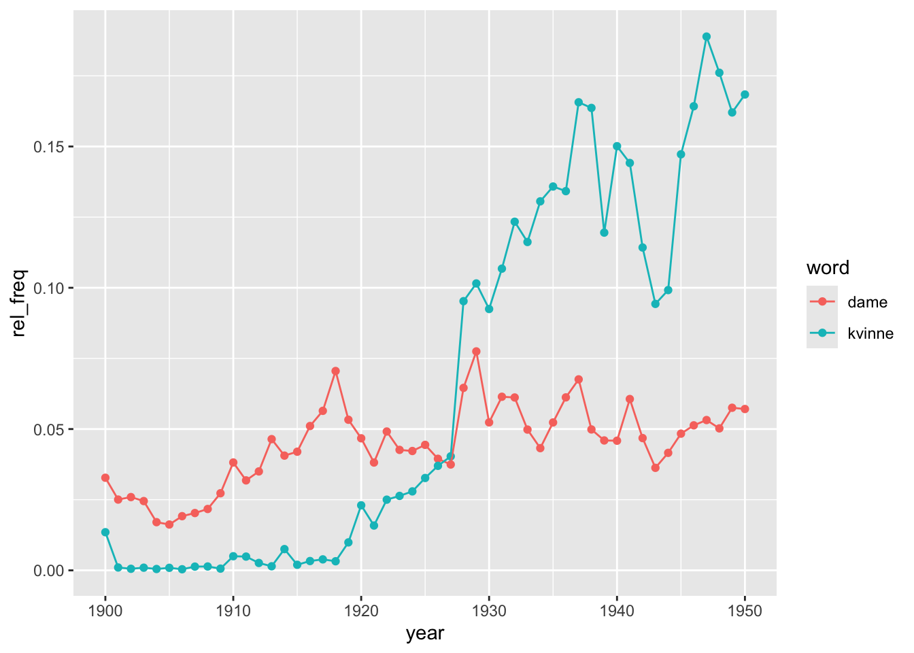

Show code
# install.packages("devtools")
# install.packages("pak")
# devtools::install_github("NationalLibraryOfNorway/dhlabR")
# pak::pak("NationalLibraryOfNorway/dhlabR")
library(tidyverse)
library(dhlabR)Norway has been fortunate to have the financial muscle and the political will to adopt a massive digitization of its historical record. In 2006, the Norwegian National Library started digitising its entire collection. This programme has resulted in million of digitised resources (books, manuscripts, newspapers, letters, etc.). this programme has been combined with efforts at making this wealth of material as accessible as possible. The Nasjonalbibliotek website, for instance, is wonderful and makes browsing the catalogue and looking up for particular records extremely easy, even pleasant as illustrated in the image below. Feel free to have a look at some of the available collections
 Likewise, as well as hosting an online norsk n-gram for quering the corpus, the team at DH-LAB is also creating its own tools for exporing and analysing their collections, including dhlabR an R package to directly interact with the corpus. Although it is still in development, this post we will explore some of its features so we can access and explore its massive corpus using computational tools.
Likewise, as well as hosting an online norsk n-gram for quering the corpus, the team at DH-LAB is also creating its own tools for exporing and analysing their collections, including dhlabR an R package to directly interact with the corpus. Although it is still in development, this post we will explore some of its features so we can access and explore its massive corpus using computational tools.
The package dhlabR interacts with the API of National Biblioteket. Although it does not allow to download full texts, you can query the collection, get the necessary metadata (including text IDs) and extracting text-derived outputs such as token frequencies or the text around keywords.
Using this R package usually entail two steps:
Retrieve corpus metadata based on quering the corpus using given parameters such as author, title, year, language, type of document (e.g. book, newspaper, etc.), among others. This query is sent to the DH-LAB API and returns a table of matching documents, including document ID and associated metadata.
Request derived text data: term frequencies, concordances, collocations, etc. Instead of extracting full texts directly, you obtain representations (term frequencies, terms around keywords, etc.) tied to those document IDs, usually as a data frame or a list that you can use in R for analysis and visualisation.
Here I provide a basic overview of some of these functions.
First, you need to install and load the package dhlabR. Given that it is a beta version, it is not available via the usual channel but with the following commands (de-activated in my case). Make sure to also install devtools and pak if you haven’t used these packages before.
# install.packages("devtools")
# install.packages("pak")
# devtools::install_github("NationalLibraryOfNorway/dhlabR")
# pak::pak("NationalLibraryOfNorway/dhlabR")
library(tidyverse)
library(dhlabR)Once the package is loaded, you get access to different functions, such as get_document_corpus(), get_document_frequencies(), get_concordance(), or get_collocations(), among others. Let’s go through them separately.1
1 The number of documents analysed here may be slightly different than what you get if you replicate the same commands if the National Biblioteket has modified the underlying corpus since I conducted this exercise (March 23, 2026).
get_document_corpus() queries the corpus available at NB and retrieve the associated metadata. This query is defined by particular parameters such as author, title, year, language, type of document (e.g. book, newspaper, journal, letter, etc.), among others. The following, for instance, extracts the metadata associated to texts stored as “digibok”, written by “Ibsen” between the years 1880 and 1890 (note that the argument to_year retrieves up to the defined year, without including it). The argument limit sets the maximum number of items that can be retrieved. Here we are getting 37 rows, so setting it to “50” is fitting, so you do not miss any (careful because the default value is 10). By default, limit is set to 10, so you need to explicitly set a larger number if you want to retrieve all the documents meeting your query. This function returns a data frame, so I use glimpse() to have a sense of how the data looks like (you can also just type the name of the object). As mentioned above, none of these fields contain the text itself associated with these documents (more on this later).
# Get corpus
corpus <- get_document_corpus(
doctype = "digibok", author = "Ibsen",
from_year = 1880, to_year = 1891,
limit = 50)
corpus |> glimpse()Rows: 43
Columns: 19
$ dhlabid <named list> 100633970, 100622098, 100354315, 100654413, 10032…
$ urn <named list> "URN:NBN:no-nb_digibok_2017030148005", "URN:NBN:n…
$ title <named list> "Hærmændene på Helgeland : skuespil i fire handli…
$ authors <named list> "Ibsen , Henrik", "Ibsen , Henrik", "Bødtker , Si…
$ oaiid <named list> "oai:nb.bibsys.no:990004798964702202", "oai:nb.bi…
$ sesamid <named list> "90b243a79fbbcfbf9fa5c7f53712ea82", "59143ff7dd89…
$ isbn10 <named list> "", "", "", "", "", "", "", "", "", "", "", "", "…
$ city <named list> "København", "København", "Kristiania", "Norge", …
$ timestamp <named list> 18850101, 18820101, 18800101, 1880, 18830101, 188…
$ year <named list> 1885, 1882, 1880, 1880, 1883, 1884, 1883, 1888, 1…
$ publisher <named list> "Gyldendalske Boghandel", "Gyldendalske Boghandel…
$ langs <named list> "nob", "nob", "nob", "nob / swe / fre", "nob", "n…
$ subjects <named list> "", "", "", "Arbeiderklassen / Union / Dyr / Hyll…
$ ddc <named list> "", "", "", "", "", "", "", "", "", "", "", "", "…
$ genres <named list> "", "drama", "", "poetry / tekst", "fiction", "",…
$ literaryform <named list> "Uklassifisert", "Skjønnlitteratur", "Uklassifise…
$ doctype <named list> "digibok", "digibok", "digibok", "digibok", "digi…
$ ocr_creator <named list> "dhlab", "dhlab", "nb", "", "nb", "nb", "dhlab", …
$ ocr_timestamp <named list> 20221209, 20221201, 20060101, "", 20060101, 20060…Notice that, instead of as characters or numerical values, the columns are formated as list-columns. This is because the API returns nested JSON, which the package converts into lists inside a tibble. Retrieving these values requires converting them. You can, for instance, transform them using map_chr() or map_int() depending on whether the underlying values are strings or numerical.2 As shown below, the fields dhlabid and title are now expressed as integers (
2 If the list contains more than one value for each row (locations or publishers, for instance), you can use unnest(). You can use lengths() to check if that is the case.
corpus <- corpus |>
mutate(title = map_chr(title, 1),
dhlabid = map_int(dhlabid, 1))
corpus |> glimpse()Rows: 43
Columns: 19
$ dhlabid <int> 100633970, 100622098, 100354315, 100654413, 100329338, 1…
$ urn <named list> "URN:NBN:no-nb_digibok_2017030148005", "URN:NBN:n…
$ title <chr> "Hærmændene på Helgeland : skuespil i fire handlinger", …
$ authors <named list> "Ibsen , Henrik", "Ibsen , Henrik", "Bødtker , Si…
$ oaiid <named list> "oai:nb.bibsys.no:990004798964702202", "oai:nb.bi…
$ sesamid <named list> "90b243a79fbbcfbf9fa5c7f53712ea82", "59143ff7dd89…
$ isbn10 <named list> "", "", "", "", "", "", "", "", "", "", "", "", "…
$ city <named list> "København", "København", "Kristiania", "Norge", …
$ timestamp <named list> 18850101, 18820101, 18800101, 1880, 18830101, 188…
$ year <named list> 1885, 1882, 1880, 1880, 1883, 1884, 1883, 1888, 1…
$ publisher <named list> "Gyldendalske Boghandel", "Gyldendalske Boghandel…
$ langs <named list> "nob", "nob", "nob", "nob / swe / fre", "nob", "n…
$ subjects <named list> "", "", "", "Arbeiderklassen / Union / Dyr / Hyll…
$ ddc <named list> "", "", "", "", "", "", "", "", "", "", "", "", "…
$ genres <named list> "", "drama", "", "poetry / tekst", "fiction", "",…
$ literaryform <named list> "Uklassifisert", "Skjønnlitteratur", "Uklassifise…
$ doctype <named list> "digibok", "digibok", "digibok", "digibok", "digi…
$ ocr_creator <named list> "dhlab", "dhlab", "nb", "", "nb", "nb", "dhlab", …
$ ocr_timestamp <named list> 20221209, 20221201, 20060101, "", 20060101, 20060…You can obviously make use of the information associated with each document, the metadata codified in the remaining fields, in different ways. You can for instance have a sense of the different genres included in this corpus. You might perhaps be interested in a particular genre or want to perform your analysis separately for each genre.
corpus |>
mutate(genres = map_chr(genres, 1)) |>
count(genres) genres n
1 24
2 drama 12
3 fiction 6
4 poetry / tekst 1The example above retrieves a corpus of books (“digbok”: novels, monographs, plays, etc.), but defining the argument doctype differently allows accessing other materials, such as newspapers (“digavis”), journals and periodicals (“digitidsskrift”), letters and manuscripts (“digimanus”) or images (“digifoto”). The example below retrieves 20 newspapers published in 1905. Note that I am setting lang = NULL to avoid the default language (“nob”; bokmål, the official Norwegian language), which may make less sense in historical documents. The metadata contains potentially interesting information such as “title”, place of publication (“city”) or date of publication (“year” or “timestamp”).
newspapers <- get_document_corpus(
doctype = "digavis",
from_year = 1904, to_year = 1906,
lang = NULL,
limit = 20)
newspapers |> glimpse()Rows: 20
Columns: 19
$ dhlabid <named list> 203386631, 203152953, 200847060, 202478853, 20021…
$ urn <named list> "URN:NBN:no-nb_digavis_sarpen_null_null_19040713_…
$ title <named list> "sarpen", "nordenfjeldsktidende", "jarlsbergoglar…
$ authors <named list> "", "", "", "", "", "", "", "", "", "", "", "", "…
$ oaiid <named list> "", "", "", "", "", "", "", "", "", "", "", "", "…
$ sesamid <named list> "", "", "", "", "", "", "", "", "", "", "", "", "…
$ isbn10 <named list> "", "", "", "", "", "", "", "", "", "", "", "", "…
$ city <named list> "", "Levanger", "Larvik", "", "Bergen", "Oslo", "…
$ timestamp <named list> 19040713, 19050106, 19040720, 19050417, 19041215,…
$ year <named list> 1904, 1905, 1904, 1905, 1904, 1905, 1904, 1904, 1…
$ publisher <named list> "", "", "", "", "", "", "", "", "", "", "", "", "…
$ langs <named list> "", "", "", "", "", "", "", "", "", "", "", "", "…
$ subjects <named list> "", "", "", "", "", "", "", "", "", "", "", "", "…
$ ddc <named list> "", "", "", "", "", "", "", "", "", "", "", "", "…
$ genres <named list> "", "", "", "", "", "", "", "", "", "", "", "", "…
$ literaryform <named list> "", "", "", "", "", "", "", "", "", "", "", "", "…
$ doctype <named list> "digavis", "digavis", "digavis", "digavis", "diga…
$ ocr_creator <named list> "nb", "nb", "nb", "nb", "nb", "nb", "nb", "nb", "…
$ ocr_timestamp <named list> 20060101, 20060101, 20060101, 20060101, 20060101,…Searching for the occurrence of particular terms within the corpus is a popular strategy when exploring textual information. The function get_document_frequencies() search within the respective NB collections and computes ngram counts of the documents that are specified, an information that is contained in the corpus metadata retrieved in the previous step. The results can be analysed and plotted using regular R functions.
Let’s start from afresh and define the corpus we want to explore. Imagine that we want to track the relative importance of the terms “dame” and “kvinne” to refer to women during the first half of the 20th century. We will focus on books, the literary realm. We first extract the metadata behind the digitised collection. As mentioned earlier, it is important to define a limit that is larger than the collection itself, so we don’t miss any text (this is basically done by trial and error). The resulting dataframe, containing information on 58,228 documents, is stored as an object named books.
books <- get_document_corpus(
doctype = "digibok",
from_year = 1900, to_year = 1951,
lang = NULL,
limit = 100000)
books |> glimpse()Rows: 58,222
Columns: 19
$ dhlabid <named list> 100617220, 100377744, 100219360, 100259848, 10026…
$ urn <named list> "URN:NBN:no-nb_digibok_2009020904159", "URN:NBN:n…
$ title <named list> "Fred med Norge : tal vid fredsdemonstrationen i …
$ authors <named list> "Gullers , Emil", "Vegard , L. / Hillesund , Sigu…
$ oaiid <named list> "oai:nb.bibsys.no:999703500404702202", "oai:nb.bi…
$ sesamid <named list> "3820e909becc25d5fcd25a130b941657", "aa180a0e60e1…
$ isbn10 <named list> "", "", "", "", "", "", "", "", "", "", "", "", "…
$ city <named list> "", "Oslo", "Oslo", "Kristiania", "[Oslo]", "Kris…
$ timestamp <named list> 19050101, 19420101, 19440101, 19190101, 19320101,…
$ year <named list> 1905, 1942, 1944, 1919, 1932, 1906, 1938, 1910, 1…
$ publisher <named list> "Wilhelmsson", "I kommisjon hos Dybwad", "Nytteve…
$ langs <named list> "swe", "ger", "nob", "nob", "nno", "nno", "nno", …
$ subjects <named list> "Unionsoppløsningen (1905) / Fred", "", "lin / te…
$ ddc <named list> "", "", "", "", "", "", "", "", "", "", "", "398"…
$ genres <named list> "", "", "", "", "", "", "", "", "", "", "", "", "…
$ literaryform <named list> "Uklassifisert", "Uklassifisert", "Uklassifisert"…
$ doctype <named list> "digibok", "digibok", "digibok", "digibok", "digi…
$ ocr_creator <named list> "dhlab", "nb", "nb", "nb", "nb", "nb", "nb", "nb"…
$ ocr_timestamp <named list> 20221201, 20060101, 20060101, 20060101, 20060101,…We now use get_document_frequencies() to retrieve word counts of the terms we are interested in. The computation itself takes place in the NB server, where the texts themselves are located, and we get the results. What this function is doing is to search for a list of particular words in the documents from the corpus we are studying, identified by their pids, which are stored in the object corpus and field urn. The function distinguish between lower- and upper-case letter, so make sure to expand the number of keywords accordingly if you think that finding upper-case characters is important. For comparison, it is important to include a term that is common enough to appear in almost all documents (e.g. “og” or “er”). Otherwise, you get only information on the documents providing hits.
women_freq <- get_document_frequencies(
pids = books$urn,
words = c("dame", "damer", "kvinne", "kvinner", "og", "er"))
glimpse(women_freq)Rows: 163,909
Columns: 4
$ V1 <list> 100502131, 100502266, 100502268, 100502461, 100502533, 100502678, …
$ V2 <list> "dame", "dame", "dame", "dame", "dame", "dame", "dame", "dame", "d…
$ V3 <list> 2, 1, 1, 1, 1, 3, 19, 1, 1, 2, 1, 15, 1, 9, 3, 3, 9, 8, 15, 22, 3,…
$ V4 <list> 138288, 109973, 130050, 45193, 23226, 118260, 85964, 53291, 51249,…The command above returns a data frame with 163909 rows. Notice that the API returns four unnamed columns referring to the document identifier (V1), the term(s) we were looking for (V2), the frequency those terms appear in that particular document (V3) and the total word count in that document (V4). Also, as before, these fields are structured as lists. It is therefore a good idea to tidy the data frame up a bit.
women_freq <- women_freq |>
rename(dhlabid = V1,
word = V2,
count = V3,
doc_length = V4) |>
as_tibble() |>
mutate(dhlabid = map_int(dhlabid, 1),
word = map_chr(word, 1),
count = map_int(count, 1),
doc_length = map_int(doc_length, 1))
women_freq# A tibble: 163,909 × 4
dhlabid word count doc_length
<int> <chr> <int> <int>
1 100502131 dame 2 138288
2 100502266 dame 1 109973
3 100502268 dame 1 130050
4 100502461 dame 1 45193
5 100502533 dame 1 23226
6 100502678 dame 3 118260
7 100503009 dame 19 85964
8 100503166 dame 1 53291
9 100503169 dame 1 51249
10 100503282 dame 2 174321
# ℹ 163,899 more rowsThe resulting object now contains the information we were looking for and structured in a familiar way. Note that this object only contains the counts themselves. However, we have the document ids (dhlabid), so we could retrieve the metadata that was stored in the first object we retrieve (stored as books here), so we can make use of features such as “year” and “city” of publication, “author,”genres”, etc.3 We can therefore merge both objects together, the one with the metadata and the one with the term frequencies.
3 There are more fields but here we just focus on some of them.
However, it is important to realise that the data frame above is unbalanced because each row refers to a document where the particular term is mentioned at least once (no row is created if if the particular term is not mentioned). Counting the number of rows for each term makes this very clear. Recall that our corpus has 58,228 documents. The table below indicates the number of documents in which those terms are mentioned. The terms “er” and “og” show up in almost all of them (53,327 and 52,781, respectively) and we can perhaps safely argue that, if those terms do not show up, the document itself is probably unimportant or not very representative, so not having info on them (e.g. doc_lenght) is not going to affect our results.
women_freq |>
count(word)# A tibble: 6 × 2
word n
<chr> <int>
1 dame 14953
2 damer 12373
3 er 53327
4 kvinne 14922
5 kvinner 15553
6 og 52781In fact, the problem is less severe because there are documents which do not mention “og” but do mention “er” (or the other terms) and vice versa, so the total number of documents with at least one occurrence is slightly higher (53,877; but not the full universe we started with). A potential solution is going back and add more terms to the search but we may not succeed in hitting all documents because a few of them might be very short documents anyway.
women_freq |>
count(dhlabid)# A tibble: 53,877 × 2
dhlabid n
<int> <int>
1 100000002 4
2 100000009 2
3 100000011 3
4 100000016 4
5 100000017 3
6 100000019 6
7 100000022 2
8 100000472 1
9 100000473 2
10 100000474 2
# ℹ 53,867 more rowsMore important is the unbalanced nature of the data frame above. Take into account, for instance, that if our search has found 3 instances of “og” in 1 document but none of the other terms, the data frame only contains one row for that document: the one indicating that word “og” has a count of 3 (and doc_lenght of “whatever”). We want though to have a “complete” data frame containing 6 rows for each document, one for each word we are looking for, indicating a count of 0 when that is the case. The way to deal with is to use complete(), a commands that adds the rows with the categories that are missing (in our case, the terms that are not mentioned in the documents). The function complete() requires indicating the identifying field and the full set of categories present in the other field.
women_freq <- women_freq |>
complete(dhlabid,
word = c("dame", "damer", "kvinne", "kvinner", "og", "er"))
women_freq# A tibble: 323,262 × 4
dhlabid word count doc_length
<int> <chr> <int> <int>
1 100000002 dame 10 42104
2 100000002 damer 1 42104
3 100000002 er 447 42104
4 100000002 kvinne NA NA
5 100000002 kvinner NA NA
6 100000002 og 1349 42104
7 100000009 dame NA NA
8 100000009 damer NA NA
9 100000009 er 534 61896
10 100000009 kvinne NA NA
# ℹ 323,252 more rowsThe result is a data frame with 323,262 rows, which is the number of individual documents with at least 1 hit (53,877) times 6, the number of terms we searched for. Note for instance the 6 first rows above that refer to the document “100000002”. This document is 42,104 words long and the terms “dame”, “damer”, “er” and “og” are mentioned 10, 1, 447 and 1,349 times, respectively. The terms “kvinne” og “kvinner” are not mentioned, so they did not have a row. The function complete() added that row and assigned the value NA. We just need to fill in the gaps (NAs) with the adequate information, so we know not only the positive hits but also those with no hits, as well as the associated length of that document (doc_lenght).
women_freq <- women_freq |>
mutate(count = if_else(is.na(count), 0, count)) |>
group_by(dhlabid) |>
mutate(doc_length = mean(doc_length, na.rm = TRUE)) |>
ungroup()
women_freq# A tibble: 323,262 × 4
dhlabid word count doc_length
<int> <chr> <dbl> <dbl>
1 100000002 dame 10 42104
2 100000002 damer 1 42104
3 100000002 er 447 42104
4 100000002 kvinne 0 42104
5 100000002 kvinner 0 42104
6 100000002 og 1349 42104
7 100000009 dame 0 61896
8 100000009 damer 0 61896
9 100000009 er 534 61896
10 100000009 kvinne 0 61896
# ℹ 323,252 more rowsLet’s then merge both objects. The original one also needs a bit of tuning. For simplicity, we just keep 4 fields of all the available metadata.
books_freq <- books |>
as_tibble() |>
select(dhlabid, year, city, authors, genres) |>
mutate(dhlabid = map_int(dhlabid, 1),
year = map_int(year, 1),
city = map_chr(city, 1),
authors = map_chr(authors, 1),
genres = map_chr(genres, 1)) |>
full_join(women_freq, by = "dhlabid")
books_freq # A tibble: 327,607 × 8
dhlabid year city authors genres word count doc_length
<int> <int> <chr> <chr> <chr> <chr> <dbl> <dbl>
1 100617220 1905 "" Gullers , Emil "" dame 0 3383
2 100617220 1905 "" Gullers , Emil "" damer 1 3383
3 100617220 1905 "" Gullers , Emil "" er 0 3383
4 100617220 1905 "" Gullers , Emil "" kvin… 0 3383
5 100617220 1905 "" Gullers , Emil "" kvin… 0 3383
6 100617220 1905 "" Gullers , Emil "" og 0 3383
7 100377744 1942 "Oslo" Vegard , L. / Hillesund… "" dame 0 7073
8 100377744 1942 "Oslo" Vegard , L. / Hillesund… "" damer 0 7073
9 100377744 1942 "Oslo" Vegard , L. / Hillesund… "" er 6 7073
10 100377744 1942 "Oslo" Vegard , L. / Hillesund… "" kvin… 0 7073
# ℹ 327,597 more rowsWe have some more rows now than before because the original corpus had more documents than the ones containing the terms we defined. As argued above, this is not very important, so we could easily drop them (they will have missing values in the columns word, count and doc_length).
So we now have a corpus of documents, its associated metadata, the frequency of particular terms and the total word count. The only issue is that a minority of documents don’t have term frequency data because they returned no hits (these can be mitigated by adding more key terms to the search function). We are now ready to see the results of our analysis. We can, for instance, track the evolution of the relative importance of those terms over time. Given that dame/damer and kvinne/kvinner are meant to capture the same concept, we can first aggregate them before relativising the doc_length. Given that documents are quite varied in size, we compute an weigthed average. Check what the code in doing in each successive step.
books_freq |>
filter(!is.na(word)) |>
filter(word!="og" & word!="er") |>
mutate(word = if_else(word=="kvinner", "kvinne", word),
word = if_else(word=="damer", "dame", word)) |>
group_by(dhlabid, year, word) |>
summarise(count = sum(count, na.rm = TRUE),
doc_length = mean(doc_length, na.rm = TRUE)) |>
ungroup() |>
mutate(rel_freq = 1000*count/doc_length) |>
group_by(year, word) |>
summarise(rel_freq = weighted.mean(rel_freq,
doc_length, na.rm = TRUE)) |>
ggplot(aes(x = year, y = rel_freq, col = word)) +
geom_point() + geom_line()
This analysis could be refined in many different ways. We could for instance explore what is behind these trends by distinguishing by genre or dropping the shortest or the longest texts to check whether the results are driven by a particular type of text. There could also be regional differences or by authorship, among other potential hypotheses. It is possible that the trends do not reflect real changes in language use but in the composition of the corpus. In general, always be careful with the composition of the sample in large-scale collections. Imagine that a bunch of specific records (e.g. periodicals, children lit, etc.), published between 1927 and 1940, make up for a significant fraction of the digitised texts present in the collection for that period. The use of “dame/r” and “kvinne/r” in those records would potentially be driving the results but they might not be representative of the phenomenon we are studying.
As well as getting term frequencies, the package dhlabR allows extracting the terms occurring next to the word we are interested in. The function get_collocations() works the same way as the one computing term frequencies. It requires providing a vector containing the unique identifiers of the texts in the corpus we are analysing (pid), the target word (word) and the number of words before and after the target word to include as context (the default is 10 in both).
To limit computational requirements, let’s use a more limited corpus: the books published in the 1930s (a corpus with 10,698 items).
books <- get_document_corpus(
doctype = "digibok",
from_year = 1930, to_year = 1939,
lang = NULL,
limit = 15000)We now make the query for obtaining the words occurring next to “dame” within a window of 5 words (before and after). We can only query one term at a time but it is easy to append different data frames after if we wished so. The argument sample_size indicates the number of samples we are retrieving from the API (default is 5000). Instead of analyzing all occurrences of the word in the corpus, the function can analyze a random sample of them to reduce computations. Setting a higher number gets you closer to the full corpus but slows down the computations.
collocations <- get_collocations(
pids = books$urn,
word = "dame",
before = 5,
after = 5,
sample_size = 10000)
collocations |>
head(n = 10) counts dist bdist
übønnhørlige 3 1 0.2
Kate 3 1 0.2
misakte 3 1 0.2
vrai 2 1 0.25
elegantiarum 2 1 0.25
arbiter 2 1 0.25
TÅKEN 2 1 0.25
McTavish 2 1 0.25
fraulein 2 1 0.25
Challenger 2 1 0.25This function returns a data frame with three columns: counts, dist and bdist, as well as a list with the terms that are stored as row names (not as a column). counts is the number of times a particular term shows up within the specified window around the target word. dist and bdist are weighted distance score to identify how far from the target word (the latter is a bidirectional distance score). As before, the resulting data frame needs to be tuned before use (a bit involved to be sure because the resulting data frame may sometimes empty fields). For simplicity, let’s also drop the weighting fields:
collocations <- collocations |>
rownames_to_column("term") |>
as_tibble() |>
mutate(counts = map_int(counts, ~ if (length(.x) == 0) NA_integer_
else as.integer(.x[[1]])),
dist = map_dbl(dist, ~ if (length(.x) == 0) NA_real_
else as.numeric(.x[[1]])),
bdist = map_dbl(bdist, ~ if (length(.x) == 0) NA_real_
else as.numeric(.x[[1]]))) |>
select(term, counts)
collocations # A tibble: 20,609 × 2
term counts
<chr> <int>
1 übønnhørlige 3
2 Kate 3
3 misakte 3
4 vrai 2
5 elegantiarum 2
6 arbiter 2
7 TÅKEN 2
8 McTavish 2
9 fraulein 2
10 Challenger 2
# ℹ 20,599 more rowsThe most common terms next to “dame” are stop words (and punctuation symbols), as expected.
collocations |>
arrange(desc(counts))# A tibble: 20,609 × 2
term counts
<chr> <int>
1 en 12180
2 , 10849
3 . 9390
4 og 4628
5 som 4130
6 med 3014
7 i 2853
8 var 2832
9 den 2567
10 er 2024
# ℹ 20,599 more rowsWe need to get rid of them. One way of doing this is by having a dictionary of Norwegian stop words that we could rely on. The function get_stopwords() from the tidytext package pulls stop words from different languages. Here we choose "no".
library(tidytext)
norsk_stop <- get_stopwords(language = "no")
norsk_stop# A tibble: 176 × 2
word lexicon
<chr> <chr>
1 og snowball
2 i snowball
3 jeg snowball
4 det snowball
5 at snowball
6 en snowball
7 et snowball
8 den snowball
9 til snowball
10 er snowball
# ℹ 166 more rowsThe resulting data frame contains 176 Norwegian stopwords, such as “og”, “i”, “jeg”, “det”, etc. We can then remove them from the previous object using anti_join() and present the most common terms occurring next to “dame”.
collocations |>
anti_join(norsk_stop, by = c("term" = "word")) |>
arrange(desc(counts))# A tibble: 20,463 × 2
term counts
<chr> <int>
1 , 10849
2 . 9390
3 ung 1918
4 » 1624
5 « 1495
6 En 1433
7 — 1371
8 unge 1205
9 sig 935
10 ? 824
# ℹ 20,453 more rowsThere are still some issues here. The most apparent is all those punctuation symbols but we can also see that upper- and lower-case letters might prevent identifying terms that are otherwise equal.4 Although invisible, there might also be blanks at the beginning or at the end of a string that also count as characters and complicate identifying the same terms. The code below therefore removes potential blank spaces, converts all characters into lower-case and filters out rows containing symbols instead of letters using a regular expression that allows one or more of the specified characters between the start and the end of a string. Notice also that we are removing the stop words last because that list is all in lower-case characters, so doing it before transforming term into lower-case would miss many stop words whose first character appears capitalised.
4 Unless we want to distinguish those terms that are located at the beginning of a sentence is useful. Similarly, punctuation marks can also be informative. It all depends on what is our research question and which features of the corpus may help us better answer it.
collocations |>
mutate(term = str_trim(term),
term = str_to_lower(term)) |>
filter(str_detect(term, "^[A-Za-zæøåÆØÅ]+$")) |>
anti_join(norsk_stop, by = c("term" = "word")) |>
arrange(desc(counts))# A tibble: 19,048 × 2
term counts
<chr> <int>
1 ung 1918
2 unge 1205
3 sig 935
4 gammel 737
5 gamle 652
6 sa 638
7 mig 468
8 liten 420
9 ham 377
10 eldre 367
# ℹ 19,038 more rowsThe results look much better and are very telling about the context in which the term dame is mentioned in this corpus. It seems that having a sense of women’s ages was very important in those books published in 1930.
As well as counting the terms appearing next to the word we are interested in, we may want to have a look at the overall context in which those words appear. The function get_concordance() does the job for you. It works as the previous functions: it requires providing the text identifiers (pid), indicating the term (or terms) we are interested in (words) and specifying the window, the number of characters before and after the matching word that will be retrieved (default is 20). The optional argument limit indicates the maximum number of results to be returned (default is 5000). You will want all but here, which it is just an illustration, we set it to 20.
conc <- get_concordance(
pid = books$urn,
words = "dame",
window = 30,
limit = 20)
conc |> glimpse()Rows: 20
Columns: 3
$ docid <named list> 100159411, 100508251, 100295452, 100508048, 100367671, 10…
$ urn <named list> "URN:NBN:no-nb_digibok_2013072208052", "URN:NBN:no-nb_dig…
$ conc <named list> "Krogstad . med en <b>dame</b> . Nora . Og hvad så ?", "3…The function returns a data frame with two columns that identify the individual texts containing the target term and a column named conc with the text surrounding that keyword. As before, it needs a bit of tuning, so we have it in a more familiar format. You could now work on this data frame the same way you work with any other object we have been looking into.
conc |>
as_tibble() |>
mutate(docid = map_int(docid, 1),
urn = map_chr(urn, 1),
conc = map_chr(conc, 1)) |>
select(docid, conc)# A tibble: 20 × 2
docid conc
<int> <chr>
1 100159411 "Krogstad . med en <b>dame</b> . Nora . Og hvad så ?"
2 100508251 "3 oinineren 1932 lik jeg lra en tvBk <b>dame</b> i I ^ eipxig , I…
3 100295452 "... Straks efter kom ordonnansen tilsyne igjen , fulgt av en <b>d…
4 100508048 "... Hun saa en høi og bleg , omtrent tredveaars <b>dame</b> , som…
5 100367671 "... Men fortell nu du mig hvorfor du er så interessert i den unge…
6 100537749 "... arbeidet igjen , da han fikk øie på en post for en <b>dame</b…
7 100221416 "... I yngre år fulgte han en engelsk <b>dame</b> på jakt i Beitst…
8 100169605 "Med ess , konge , <b>dame</b> : spil kongen . Med konge , <b>dame…
9 100064240 "... et ess og en <b>dame</b> ) i grand ( før 1 % honnørstikk ) ."
10 100126518 "... Død og pine , sa han og rettet sig fort op. — Der står en sto…
11 100517164 "... avdeling fører ikke den slags , sa Gundersen , og mente at in…
12 100205097 "Brevet inneholdt for øvrig en beretning om at Bjarne Verring hadd…
13 100274169 "... Særlig vakker var hun jo ikke , men hun førte sig som en <b>d…
14 100465471 "... Jeg vet ikke , » 82 fru Legras , « en eller annen « Hvit <b>d…
15 100295077 "... Bettler : » Meine <b>Dame</b> , schenken Sie einem armen , al…
16 100572800 "Det er en ung <b>dame</b> like foran mig . Hun spør så vennlig : …
17 100543507 "... ideelle ektepar — de er skilt ! Han har funnet sig en annen <…
18 100159384 "... Det er en nieget erfaren <b>dame</b> . Elisabethstrasse . Inn…
19 100241318 "... Imidlertid hadde denne <b>dame</b> sett sitt snitt til å fors…
20 100226882 "... Hun sad ved hans Side , lænede sig tryg og fortrolig ind til …I am going to leave it here.5 I hope that this offers a hint of the promises (and perils) of accessing the collection hosted by the Norwegian National Library. It is now your turn to find interesting stories behind this wealth of information.
5 The package dhlabR is still under development and scarcely documented. There are also other functions we have not explored such as get_dispersion(). If you are interested, you can find more details here.